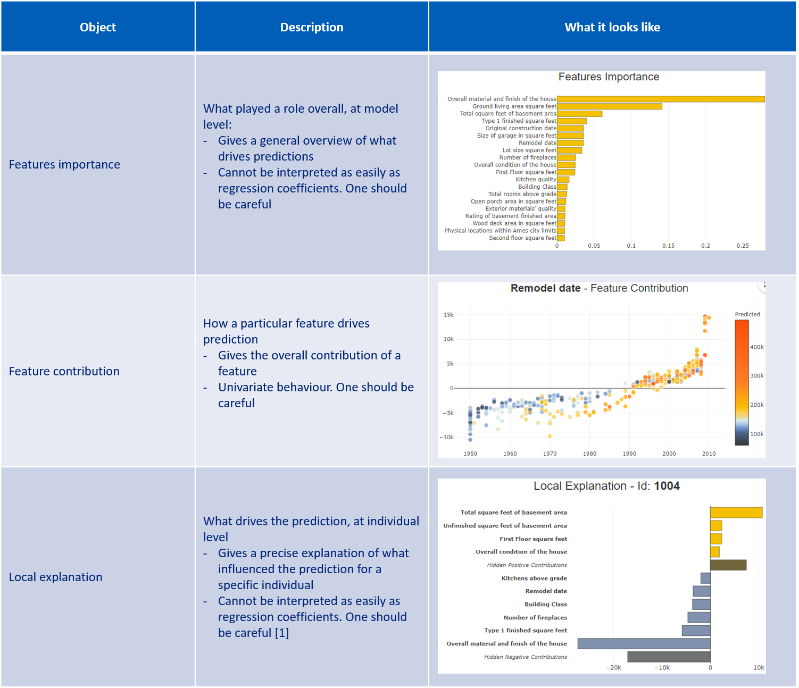
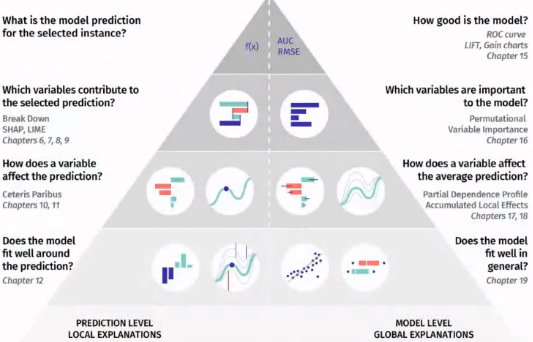
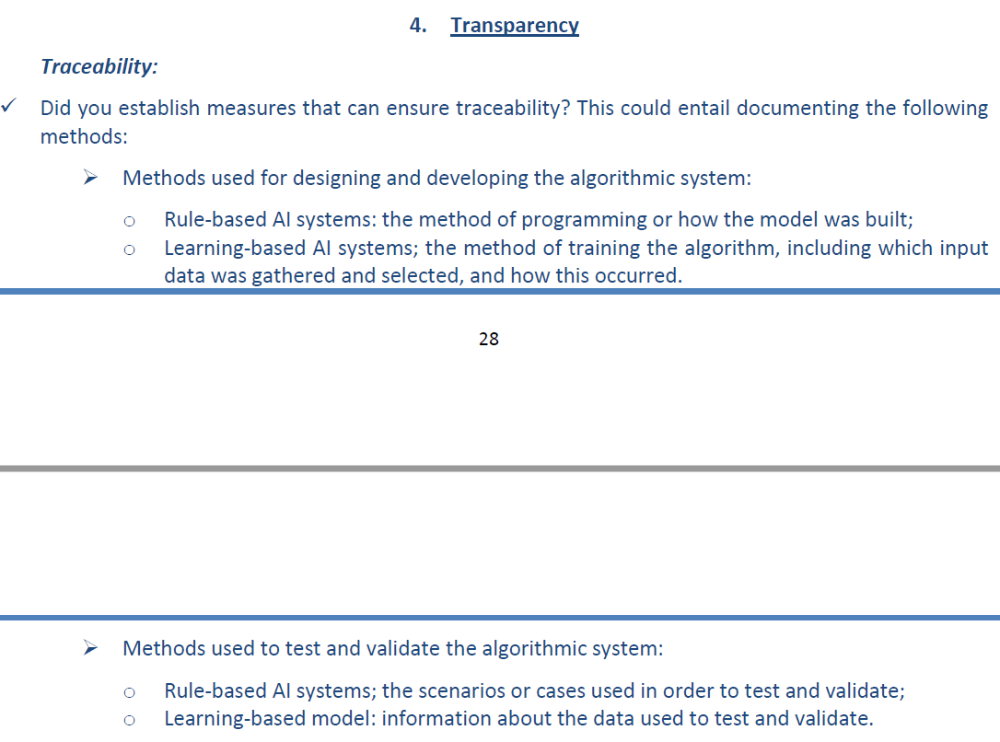
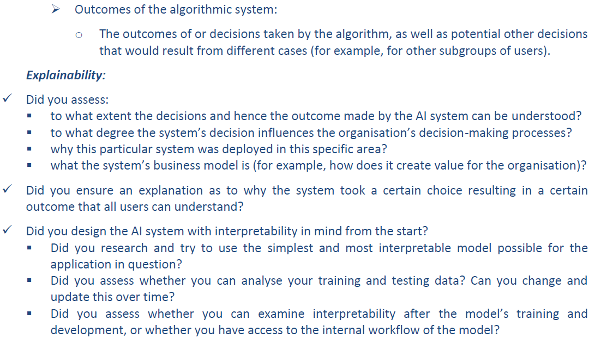
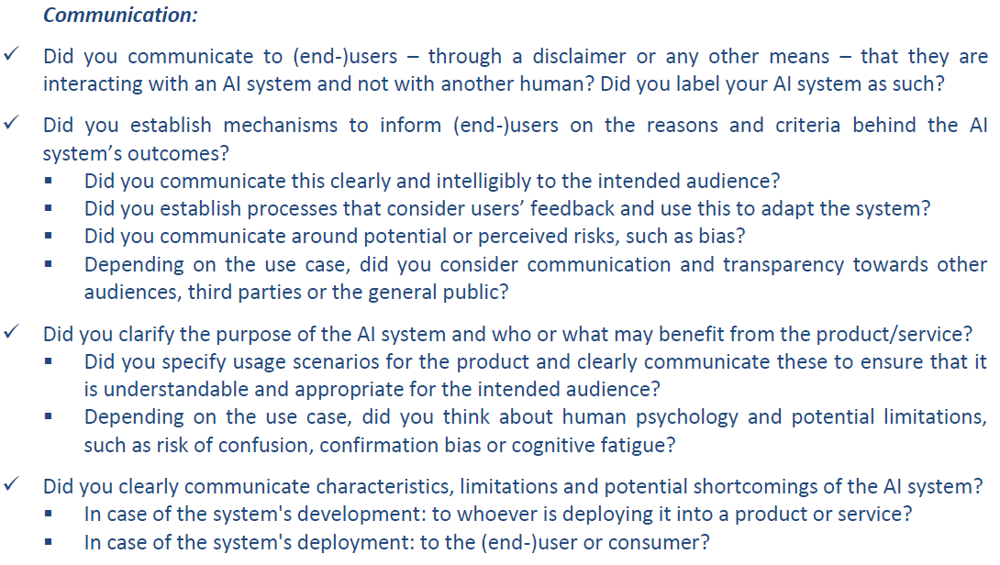

Transparency and explicability¶
Transparency and explicability are two fundamental and distinct notions when it comes to AI trustworthiness. While explicability aims at understanding the logic behind an algorithm, transparency aims at making “public” (totally or partially - within the scope of an organisation e.g.) the AI system and anything that lives with it (data, …).
Communication¶
AI contributors should always clearly and timely communicate results to stakeholders. Not only they must make them understandable for technical people, but also and more importantly for non-technical people. Practically, the AI contributor must:
Ask for feedbacks from non-technical sparring partner(s) before spreading results: is the methodology clear? Are the modelling choices (data processing, algorithms) clearly stated?
Keep a faithful representation of results and do not give in to confirmation bias
Make an outreach effort regarding AI algorithms: clearly state AI models assumptions, their advantages and potential pitfalls so that decision makers can take informed decisions. Example: qualify results of a facial recognition algorithm that would be based (pretrained) on the ImageNet dataset, which is now well known for containing bias and errors (see this link e.g.)
AI contributor’s management¶
AI contributors should always be put in a favourable condition by the management to give the alert in case of fraudulent, illegal, illegitimate, discriminatory or unethical results. Example: use of legitimate information when it comes to consumer scoring (in marketing e.g.).
A clear and shared escalation process should be defined upon a new AI system implementation in agreement with all stakeholders’ initiative. Escalations should be put in writing and documented. In case of potential breach of trust, the escalation process could take the following form:
Report the alert to the project’s team
If no arbitrage could be made, report the alert to the project’s sponsor & management
If no arbitrage could be made, report the alert to the Data Protection Officer & legal departments
AI explicability¶
AI explicability aims at creating numerical methods to extract the logics behind an AI system’s decision.
AI contributors must be sensitised and extensively leverage machine learning interpretability literature to:
Be able to extensively stress test model’s predictions.
Empower business users and foster machine learning adoption.
Understand results output by an AI system (characteristics & information that were leveraged and which ones play an important role, decision frontier of the system, behavior of internal blocks of the AI system, like hidden layers of neural network e.g., …) and trace decisions made by an AI system over time.
That being said, AI contributors should master a various set of tools, depending on the AI system that is implemented.
Statistical methods¶
AI contributors must deeply understand how to interpret coefficients and leverage econometrics-based models, like linear / logistic regression, panel data, instrumental variables, censored data, selection model, …
Example with linear regression coefficients:
Model |
Target |
Feature |
Math. interpretation |
Plain interpretation |
|---|---|---|---|---|
level - level |
\(y\) |
\(x\) |
\(\Delta y = \beta_1 \Delta x\) |
A change of 1 in \(x\) is expected to produce a change of \(\beta_1\) in \(y\) |
level - log |
\(y\) |
\(log(x)\) |
\(\Delta y = (\beta_1 / 100)\% \Delta x\) |
A change of 1% in \(x\) is expected to produce a change of \(\beta_1 / 100\) in \(y\) |
log - level (semi-elasticity) |
\(log(y)\) |
\(x\) |
\(\% \Delta y = 100\beta_1 \Delta x\) (approx. of the exact one: \(\% \Delta y = 100(e^{\beta_1} -1) \Delta x\)) |
A change of 1 in \(x\) is expected to produce a change of \(100 \beta_1 \%\) in \(y\) |
log - log (elasticity) |
\(log(y)\) |
\(log(x)\) |
\(\% \Delta y = \beta_1 \% \Delta x\) |
A change of 1% in \(x\) is expected to produce a change of \(\beta_1 \%\) in \(y\) |
ML-based algorithms¶
Standard interpretability
AI contributors must properly leverage state-of-the-art methodologies for machine learning-based models. Resources lie among: Shap, LIME, Shapash.
Below are some examples of metrics, KPIs or representations:
{kind=link}
It is important to study both global interpretation (at model level) and local interpretation (at individual level). This balance is the only way to achieve an exhaustive understanding of the AI system’s behavior, which in turns unlocks trust in the AI system.
{kind=link}
Towards prescriptive analysis
Not only machine learning interpretability eventually enables AI systems to be trusted by business users, but it also unlocks prescriptive machine learning. Predictions bring value, but actions taken upon new predictions bring even more value. Interpretability might be a way to prescriptive analysis.
Example: for a churn model, it is important to identify high-risk consumers. It is even more important to identify why they are risky, and the actions that could be taken to decrease their risk. This can be performed by producing logical and interpretable rules that describe this set of risky people. Skope-rules is a candidate (Source for the full methodology - in French).
AI transparency¶
While creating an AI system, AI contributors should enforce the system’s transparency, namely:
Document the method / theory behind the AI system.
Document, and ideally make public (or available within the company), the implementation (code) of the AI system.
Document, and ideally make public (or available within the company), the data the AI system was trained on.
Transparency allows to challenge the AI system’s weaknesses, challenge potential pitfalls of the training data, which in turns helps to check legal & ethical compliance, and to protect individuals.
Source: [FR] Transparence et explicabilité des algorithmes, la grande confusion
Appendix - Recommendations from the EU¶
Below are the recommendations directly reported from EU.
  {kind=link}
{kind=link}
{kind=link}